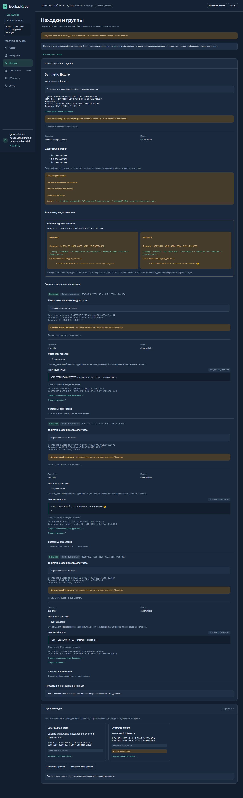
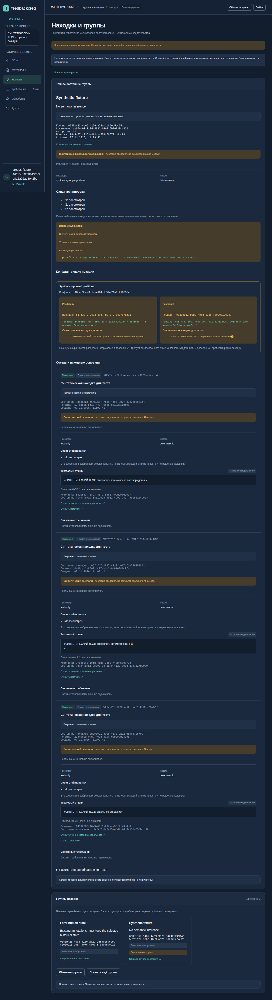
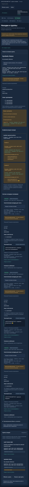
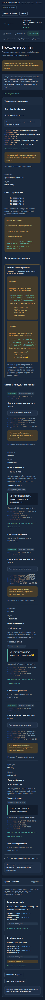

Настоящие Nginx, API, PostgreSQL и worker интеграционной ветки. Все приведённые находки и группы — синтетические тестовые данные. Языковая модель не вызывалась. Историческое human-состояние подготовлено ORM fixture; это не реализация человеческого редактирования. Группа и конфликт открыты по точному state.
Запуск и ограничения · Фактические проверки · F1: текст, обработка, находка и цитата



